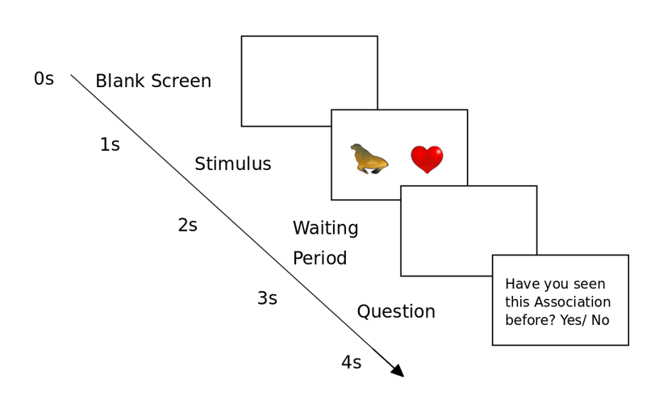

Master Thesis on Memory Update of associations in the Parietal Cortex
Research on how the post parietal cortex responds to update on previously learned memories. Interessted on how your brian reacts on something it has seen before in a new context? Then keep on reading :)
Ever seen the following picture? I am sure you can associate it with something. This we would call episodic memory because the following picture is a very abstract representation of memory. Also when you think back of yourself when you saw this image in other situations would be classified as episodic memory.
{kind=link}
So let me show you this image together with Homer on it. Now you have a memory of homer in his living room.
{kind=link}
Hmmm there he is enjoying a nice donut! So what does your brain do in that case, it creates a memory of homer in his living room. It associates Homer with his living room. Now there is the fixed association your brain did, the neurons firing when seeing homer are now also gona fire when they see the living room on its own. Crazy right? These neurons firing were called the "Jennifer Anniston Neurons", it's true, look it up!
Anyway, now your smart brain created this association, what will it probably do when I show you the following picture?

It sees Bart inside a living room. But how will it encode it? Create a whole new memory? Or it knows that it already saw the living room before and can manage to associate the two? Which frequency range is responsible for encoding those memory? This was the main research question behind my thesis.
So should we start looking inside the brain? Well, the experiment of Brodt, S. et al. (2016) observed that there was a rapid and independent memory formation in the parietal cortex. When passing by the same place inside a labyrinth, the activity in the post parietal cortex was augmenting bit by bit, as observed inside the Fmri whereas at random locations no augmentation in activity could be measured.
{kind=link}
Seems like a good place to start our research then. In their experiment fmri was used, which means they could actually see an increase in bloodflow which is an indication for a hight activity. In our case we decided to use a 20 channel EEG device to measure it. An EEG device is put on the head and has sensors all over which can measure the electric potential. When Neurons (small unit in your brain) reacts (fires), it releases an electric potential that we can measure and from which we can draw conclusions. Since the sensor is mounted on the surface of your head, we not only measure a single neuron, but a whole population of neurons beneath it. Those are always firing of course (your brain is always working), but they can fire chaoticaly or more collectively. And when they fire collectively they fire in certain frequencys from 4 - 100 Herz. Which means 4 times per minute up to 100 times per minute. Following an image of 20 channel EEG device and of where the post parietal cortex is located.
{kind=link}
{kind=link}
All in all the procedure was the following.
{kind=link}
So for the experiment we showed the participants a set of pairs of pictures several times. After the participant seeing the pair, he was asked if he alread saw the this pair before (to see if he payed attention and if it is encoded). Following schema should show some exampled we presented to the participant. We also introduced at every round some catch trials which the participant has never seen. By asking him if s/he has already seen that before we could make sure afterwards the participant payed attention. This phase can be compared to the Homer is in the livingroom.
{kind=link}
In the second round we mixed the learned associations now up with new images. This would now be Bart in the livingroom. So new associations that the participants has never seen before, which we present now multiple times.
{kind=link}
So what happens now in the brain? Will it behave as it would when learning something completely new? Or will it take advantage of the fact that it has seen part of the objects already?
And voila. We could really observe a significant difference in between phase 1 and 2. In the 1st phase (homer in livingroom) when it newly learns the first pair of associations, the activity in the theta band (3-7 Hz) and alpha band (8 - 12 Hz) rises steadily over time (blue line).
In the second phase (bart in the livingroom) where we mixed up the learned associations, the band first reacts randomly, but then quickly ramps up it's activity in the post parietal cortex to the level it ended in the first phase.
To see how much it reacts, we checked at every exposure at what level the activity was in between 1.5-2 seconds after exposure, compared to the benchmark value 0.5 - 1 second after exposure.
{kind=link}
So I hope I could show you that there is evidence for the post parietal cortex forming associations of memory using the theta and alpha frequency bands. If you want to know more about the experiment check out my written thesis here: